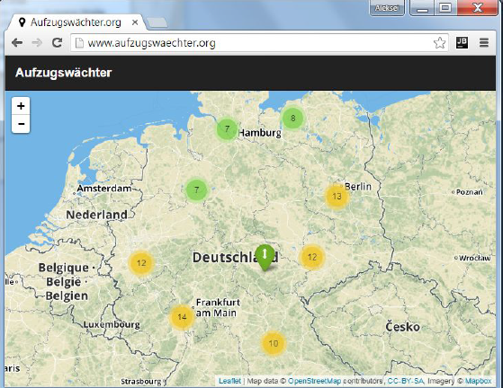

{% extends "_case-studies.html" %}
{% set case_id = 10 %}
{% block challenge %}
Jeder kennt die Situation am Bahnhof: Man steigt mit einem Kinderwagen oder schweren Koffer am Bahnsteig aus, läuft
zum Aufzug und muss feststellen, dass er nicht funktioniert. Da ist Reisefrust vorprogrammiert. Und was zu Beginn
der Reise nicht funktioniert hat, funktioniert oft auch bei der Rückkehr noch nicht wieder. Reisende und auch
Bahnhofsverantwortliche wissen nicht, ob ein Aufzug funktioniert, bis sie ihn am Bahnsteig rufen. Dabei ist die
Information, ob ein Aufzug in oder außer Betrieb ist, für einige Reisende wie z.B. Rollstuhlfahrer essenziell für
die Reiseplanung.
Auch für Bahnhofsmanager ist es deshalb wichtig sofort mitzubekommen, wenn eine Anlage ausfällt, damit die Reparatur
umgehend veranlasst werden kann. Die Bahnhofsmission wiederum weiß, dass jemand ihre Hilfe braucht, wenn ein Aufzug
nicht funktioniert. Jede Reisende würde sich außerdem freuen, wenn sie mitbekäme, wenn „ihr“ Aufzug nun wieder in
Betrieb ist.
{% endblock %}
{% block solution %}

Eine Lösung für dieses Problem bietet der Aufzugswächter der Deutschen Bahn, der bundesweit den Betriebszustand der
Aufzüge beobachtet. Interessenten können die Zustandsänderungen der Aufzüge abonnieren, die für sie relevant sind.
So werden alle Abonennten des Aufzugswächters über Ausfälle und Wiederinbetriebnahmen informiert. Die dafür
verfügbaren Kanäle sind E-Mail, Twitter und Push-Nachrichten auf dem Smartphone.
{% endblock %}
{% block datasets %}
Der Aufzugswächter verwendet die offenen API-Datensätze (Application Programming Interface, siehe
Informationskasten) der Aufzüge der DB Station & Service AG.
{% endblock %}
{% block benefitters %}
Alle Bahnreisenden deutschlandweit, insbesondere aber Personen, die in besonderem Maße auf Aufzüge angewiesen sind,
also Rollstuhlfahrer oder Reisende mit Kinderwägen, Fahrrädern und anderem sperrigen Gepäck. Darüber hinaus kann die
Bahn ihren Kunden einen besseren Service bieten, indem die Verantwortlichen durch den Aufzugswächter schneller über
Ausfälle Bescheid wissen und für Abhilfe sorgen können.
{% endblock %}
{% block outcome %}
Nils sitzt im Rollstuhl und fährt immer wieder mit der Bahn zwischen Köln und Düsseldorf. Dabei ist es ihm schon
häufiger passiert, dass an einem Bahnsteig der beiden Zielbahnhöfe der Aufzug außer Betrieb war. Für Nils sind
solche Bahnsteige regelrechte Sackgassen, denn er muss dann zum nächsten Halt weiterfahren, um dort mithilfe eines
Fahrstuhls das Gleis wechseln und zum Zielbahnhof zurückfahren zu können. Zwar kann er seine Fahrt als
Rollstuhlfahrer bei der Bahn anmelden, die ihm dann beim Ein- und Aussteigen behilflich ist, aber die
Aufzug-Situation am Gleis ist immer ein Unsicherheitsfaktor, der sich nicht vorhersagen lässt.
 In der Boardzeitung im Zug liest Nils von der Einführung des Aufzugwächters, einem digitalen
Benachrichtigungsdienst, der auf Open-Data-Basis den Betriebszustand der Auzüge am Gleis überwacht. Sofort sucht er
im Internet nach der entsprechenden App und wird fündig. Auch dem Twitter-Bot beginnt Nils zu folgen. Er abonniert
Benachrichtigungen für die Aufzüge, die auf seiner Strecke von Köln nach Düsseldorf relevant sind. So bekommt er per
Push-Nachricht auf seinem Handy mitgeteilt, wenn ein Aufzug in Köln oder Düsseldorf ausfällt und wenn er repariert
und wieder im Einsatz ist. Für Nils bedeutet dies, dass er als Rollstuhlfahrer besser planen kann. Wenn er weiß,
dass ein Aufzug in Düsseldorf zum Beispiel gerade nicht genutzt werden kann, steigt er einfach eine Station früher
oder später aus oder kann sich um eine alternative Anreise kümmern. Vor allem aber merkt er, dass die Aufzüge seit
den Echtzeit-Benachrichtigungen viel schneller als früher wieder im Einsatz sind. Und davon profitieren schließlich
alle Bahnreisenden.
In der Boardzeitung im Zug liest Nils von der Einführung des Aufzugwächters, einem digitalen
Benachrichtigungsdienst, der auf Open-Data-Basis den Betriebszustand der Auzüge am Gleis überwacht. Sofort sucht er
im Internet nach der entsprechenden App und wird fündig. Auch dem Twitter-Bot beginnt Nils zu folgen. Er abonniert
Benachrichtigungen für die Aufzüge, die auf seiner Strecke von Köln nach Düsseldorf relevant sind. So bekommt er per
Push-Nachricht auf seinem Handy mitgeteilt, wenn ein Aufzug in Köln oder Düsseldorf ausfällt und wenn er repariert
und wieder im Einsatz ist. Für Nils bedeutet dies, dass er als Rollstuhlfahrer besser planen kann. Wenn er weiß,
dass ein Aufzug in Düsseldorf zum Beispiel gerade nicht genutzt werden kann, steigt er einfach eine Station früher
oder später aus oder kann sich um eine alternative Anreise kümmern. Vor allem aber merkt er, dass die Aufzüge seit
den Echtzeit-Benachrichtigungen viel schneller als früher wieder im Einsatz sind. Und davon profitieren schließlich
alle Bahnreisenden.
{% endblock %}
{% block shortinfo %}
Was ist eine API?
Ein Application Programming Interface ist eine Programmierschnittstelle, die der strukturierten und vereinheitlichen
Datenübertragung dient. Sie übermitteln nur die Daten, die für den weiteren Programmablauf benötigt werden. Im Fall
des Aufzugwächters geben die Aufzug-APIs Aufschluss darüber, ob ein Auzug in oder außer Betrieb ist.
{% endblock %}
{% block sources %}
Offizielle Seite:
http://www.aufzugswaechter.org/
One-Pager zum Aufzugswächter:
http://www1.deutschebahn.com/file/dbs-konzerntreff/11027988/kjEYim6UEvQv8cKKBdBxoqcK4PQ/11439650/data/onepager_aufzugswaechter.pdf
Aufzugswächter bei Twitter:
https://twitter.com/aufzugswaechter
Open-Data-Portal der Deutschen Bahn:
http://data.deutschebahn.com/
Power-Point Präsentation zur Open-Data Strategie der Deutschen Bahn:
http://www.geobusiness.org/GEOBUSINESS/Redaktion/DE/Downloads/04192016-referenten-praesentation-db-friedrich.pdf?__blob=publicationFile&v=3
{% endblock %}